An interactive starfield with 7 glowing star nodes, each representing a portfolio project. Use the project navigation to select a project, or click a star directly.

An interactive starfield with 7 glowing star nodes, each representing a portfolio project. Use the project navigation to select a project, or click a star directly.
Activate a project to open its detail panel. Press Escape to close.